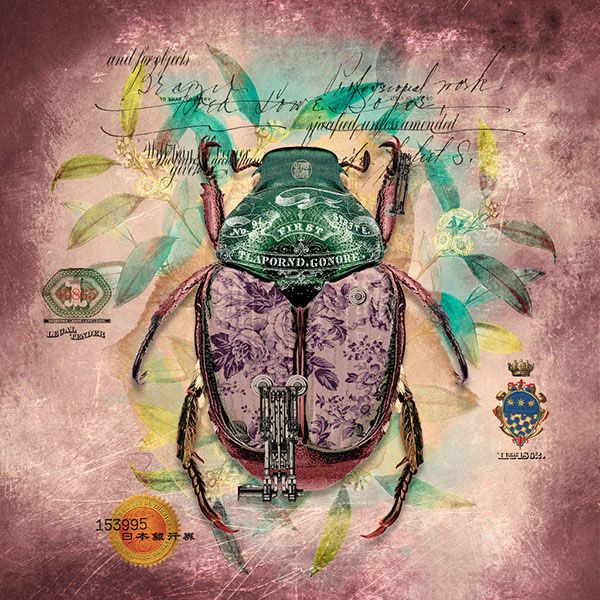
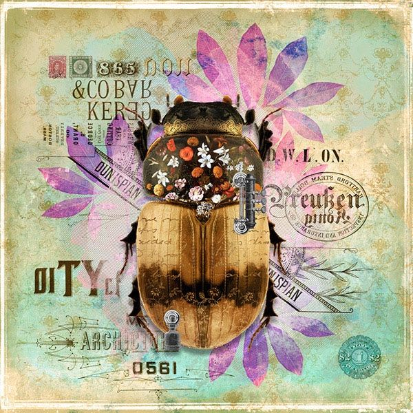

1.Тараканы
Одни из самых нелюбимых жуков в мире. Широко распространено мнение, что тараканы могли бы легко пережить ядерный катаклизм (хотя вряд ли бы справились с ядерной зимой) из-за их устойчивости к радиации. А в мозгу некоторых видов содержатся мощные антибиотики, способные одолеть вредоносные для человека бактерии.
2.Пчёлы
Они дадут фору любому насекомому, когда речь касается общения и навигации. С помощью танца они подают сородичам любые необходимые сигналы и даже проводят простые геометрические вычисления. У пчёл потрясающая память, они с лёгкостью ориентируются на местности и могут находить путь по положению солнца.
3.Саранча
— специалисты по дальним перелётам. Хотя они известны за прожорливость, на деле саранча расходует энергию с потрясающей экономией, пролетая «без зарядки» до 80 км в день. Кроме того, саранча мастерски орудует крыльями в воздухе, полностью контролируя свой полёт.